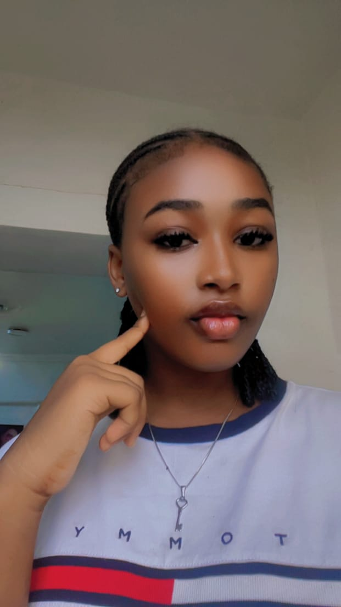

Hello, I'm Agu Genesis
I am a jovial, chill, and likeable young lady from Imo State, Nigeria. I completed my secondary education at Model Comprehensive Secondary School, Anumara, Imo State. Those years gave me a strong foundation in academics and taught me the value of discipline, hard work, and perseverance. I am currently a 100 Level student at MIVA Open University, Abuja. This is a new chapter in my life and I am embracing the opportunity to learn, grow, and build a better future for myself. I chose MIVA because I believe in modern, flexible education that allows me to develop both academically and personally. I am a person who values peace, positivity, and personal growth. I am known for my calm nature and friendly personality. I relate well with people and I believe in creating good energy wherever I go. Even when faced with challenges, I stay focused, optimistic, and committed to my goals. At this stage of my life, my main focus is on my education and self-development. I am dedicated to gaining knowledge, building skills, and preparing myself for greater opportunities ahead. I believe that consistency, hard work, and the right mindset are key to achieving success. I am on a journey of learning, growth, and self-discovery. I am determined to make the most of my university experience and to become the best version of myself.